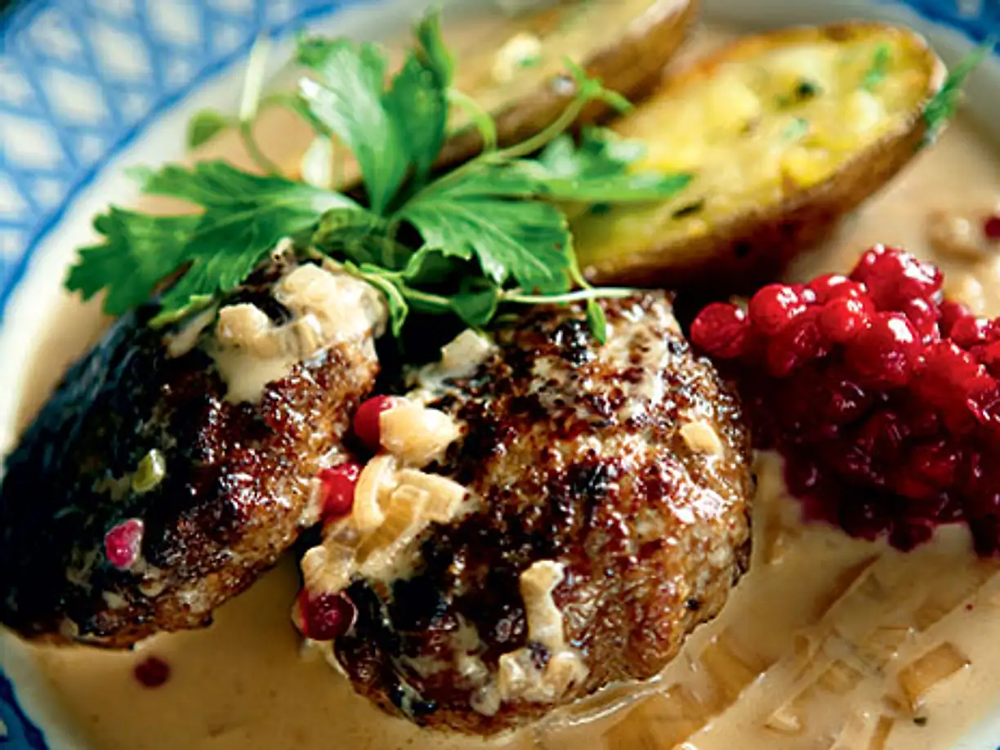

Älgfärsbiffar★
 4-6 port
4-6 port 1.5 timme
1.5 timme Kött/Fisk
Kött/Fisk
Mobergs Älgfärsbiffar

500 gälgfärs1 stägg1 tsksalt`peppar, nymalen
1 stgul lök3 stenbär2 dlvispgrädde0,5 dlströbrödrapsolja, till stekning
smör, till stekning
800 gköttfärs2 klyftorvitlök1 stgul lök
Stek köttfärs, riven gul lök & pressad vitlök